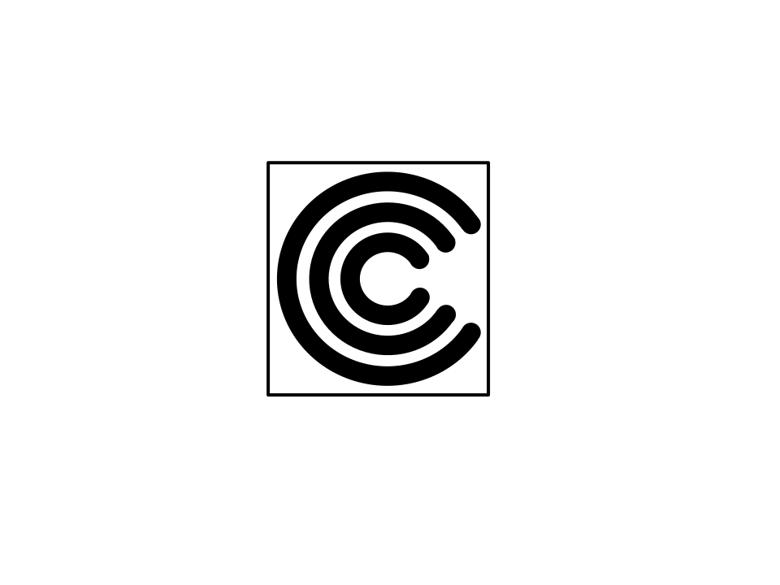

CoPolitic source and revisions
The repository, review history, code and editorial proposals. Draft pull requests are not independent peer review.
Inspect CoPolitic on GitHub
CoPoliticFor journalists, editors and curious researchers
CoPolitic explores difficult civic questions using competing explanations and evidence checks. If you are researching who is involved, what has actually been published, or which other projects relate to it, start with the inspectable sources below.
copolitic.org branded hostname has not passed its binding and HTTPS release gate. Publication, source-code availability and professional biographies do not establish independent validation or operating services.Quick context
Public first-hand routes
The repository, review history, code and editorial proposals. Draft pull requests are not independent peer review.
Inspect CoPolitic on GitHubA public, read-only educational guide to questions, provenance and responsible reporting. Not a live election audit.
Read the civic-integrity guideResearch on cooperation among people and AI tools. CoPolitic is a related civic inquiry, not an independent government institution.
Open CoCiviumPublicly listed professional and volunteer background. This is the person's profile, not a verified CoPolitic organization credential or independent endorsement.
View Rick's LinkedIn profilePublic writing and opinion by the same person, with its own authorship, timestamps and corrections. It is not CoPolitic's official evidence catalogue.
Browse RickPublic essaysAn informational consultancy front about scoped, measurable work. Research links do not imply customers, contracts, a paid CoPolitic partnership or endorsement.
Explore InSeedCoOmniVersa+ · proposed cross-project navigation
A visitor can move from CoPolitic's civic research to CoCivium's broader cooperation experiments, then independently inspect InSeed's consulting offer or Rick Ballard's professional profile and personal essays. These are source-labelled links, not a single incorporated entity, pooled customer list, common editorial endorsement, or a deployed universal connector.
The CoOmniVersa+ name describes a proposed navigation relationship. No automated multi-site synchronization or canonical CoOmniVersa runtime is verified.
Editorial verification
Use the public CoPolitic issue tracker for non-sensitive factual questions or corrections (GitHub sign-in may be needed to post). Use the individual's established profile or the separate InSeed site for their respective professional contexts. Do not place private correspondence, personal data or credentials into a public issue. A dedicated verified CoPolitic newsroom mailbox has not been established.
Describe the public research introduction as available at its GitHub Pages URL. The branded domain, interactive services, independent readership and any commercial products require their own release and verification. Do not treat a draft or source-only candidate as deployed.
No. These links do not establish press coverage, professional endorsement, reproduction permission, trademark rights or a blanket license to reuse images, articles or code. Check the original rights and attribution conditions.